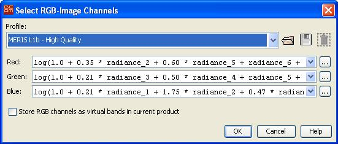

| RGB-Image Profile | |
In this window you are asked to define the RGB channels for a new RGB Image View. You are able to load defined RGB-Profiles, to create and store new or define only temporarily new profiles.

Red - Defines the mathematical expression for the red channel.
Green - Defines the mathematical expression for the green channel.
Blue - Defines the mathematical expression for the blue channel.
Use the  to
to edit the expression for the specific channel by using the Maths Expression Editor.
to
to edit the expression for the specific channel by using the Maths Expression Editor.
| Name | Type | Description |
|---|---|---|
| name | String | The name of the RGB-Profile, if given it is displayed instead of the file name. |
| internal | Boolean | The default value is false, if given and set to true it indicates that this RGB-Profile can not be deleted from the user interface (but does not prevent from overwriting the file). |
| red or r | String | The band maths expression used to create the red channel. This entry is mandatory. |
| green or g | String | The band maths expression used to create the green channel. This entry is mandatory. |
| blue or b | String | The band maths expression used to create the blue channel. This entry is mandatory. |
Example: The following profile yields good RGB images from MERIS Level-1b data products. The linear-combinations for the red, green and blue components are based on the colour matching functions of the CIE 1931 color space.
name = MERIS L1b - High Quality
internal = true
red = log(1.0 + 0.35 * radiance_2 + \
0.60 * radiance_5 + \
radiance_6 + \
0.13 * radiance_7)
green = log(1.0 + 0.21 * radiance_3 + \
0.50 * radiance_4 + \
radiance_5 + \
0.38 * radiance_6)
blue = log(1.0 + 0.21 * radiance_1 + \
1.75 * radiance_2 + \
0.47 * radiance_3 + \
0.16 * radiance_4)